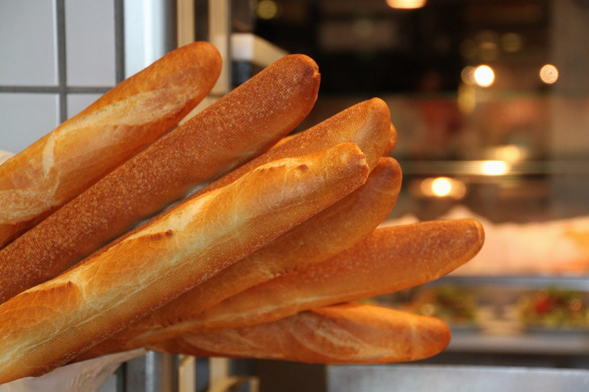

パン屋 / 鹿児島県鹿児島市
boulangeriegarde
鹿児島県鹿児島市谷山中央にあるパン屋「boulangerie garde」のご案内ページです。営業時間やメニューなど、詳しいことは準備中。まずはInstagramをのぞいてみてください。

白線の上の十四メートル
025791214
制作側の連想
「garde」から、白線を引いてみる
店名の由来は分かりません。制作側は「garde」という綴りから、フェンシングの構えの合図「アン・ガルド」を連想しました。そこで、この試作ページは競技の細長い試合場(ストリップ)の白線と目盛りを、ページの骨組みに使っています。お店の理念・由来とは無関係な、制作側の連想です。
- 0後方線
- 2警告線
- 7中央線
- 12警告線
- 14後方線
上部のナビの数字(0m〜14m)は、この目盛りに見立てたページの位置です。
ストリップ上の五枚
白線ごとに、一枚ずつ。
写真はお店のものではありません。パンや材料のイメージとして選んだ、国外・撮影地不明のフリー素材です。並べ方は制作側のデザインで、お店の商品を示すものではありません。
- 0m 後方線

撮影地不明のイメージ - 2m 警告線

撮影地不明のイメージ - 7m 中央線

撮影地不明のイメージ - 12m 警告線

撮影地不明のイメージ - 14m 後方線

国外のイメージ(スウェーデン)
ご案内
お店のこと(確認できたものだけ)
| 所在地 | 〒891-0141 鹿児島県鹿児島市谷山中央５丁目９−１３ |
|---|---|
| 電話 | なし |
| 営業時間 | 準備中 |
| 定休日 | 準備中 |
| ご予約 | 準備中 |
| 駐車場 | 準備中 |
| SNS | Instagram @boulangeriegarde |